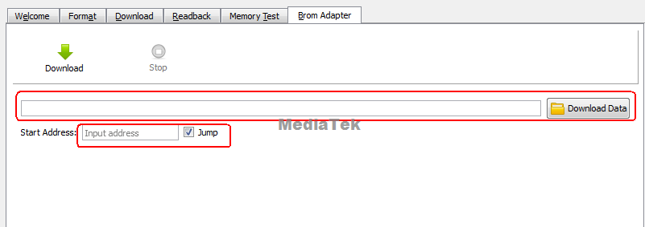

Android memery
MTK平台ETT测试介绍。
概述
由于memory 时序容易受到走线、电源系统及温度等因素的干扰，导致memory接口的不稳定，从而造成几率性不能下载、无法开机或者系统不稳定的情况； 使用ETT工具，自动同步memory设备，调试一组最优化的memory时序设定用于量产，同时检测memory接口的稳定性,避免因时序不稳定导致的系列问题； 因此，在导入新layout或者memory chip的时候都请跑一遍ETT。
ETT （EMI Tuning Tool）； EMI:(External Memory Interface):外部存储器接口；
概念： 用于同步Memory的时序检测和调试的一种工具；
使用原因：由于Memory 时序容易受到走线、电源系统及温度因素的干扰，导致接口通信不稳定，造成性能下降、无法开机或频繁重启的情况。
作用：使用ETT工具，自动同步Memory设备，调试出一组最优化的时序，用于量产；
参考文档
0001_MT6765_62_ETT_&_stress_test_reference_for_LP4X_V1.6.pdf
方法
具体请参考其中文档MT6765_62 ETT & stress test reference for LP4X V1.6.pdf，提出了以下几个测试点：
ETT test step by step (ETT测试主要是调试一组最优化的memory时序设定用于量产，需要空板(emmc未烧录)+焊接串口) 这块主要是软件人员配合硬件在新DDR上做验证
MTK Eye-Scan Function (判断ETT测试结果)
DRAM Stress Test step by step (3D TEST测试)
Nenamark2 + DVFS for Fast-K (同上)
Suspend/Resume (休眠唤醒压力测试)
Reboot(DDR Reserve mode,Full-K,Fast-k) （重启压力测试）
参考
1.烧过efuse的机器如何download ett bin进行ett测试
[DESCRIPTION]
1.目前绝大多数客户项目，出厂或量产前会烧录efuse并开启secure boot，烧录efuse过后的cpu在用普通方式下载ETT bin时出现download fail.
2.在处理跟dram相关问题时，可能会需要对机器进行跑ETT测试，以便确认机器dram哪部分可能有问题。
3.本文针对烧过efuse的机器，说明如何进行ett bin download.
对于未烧过efuse的机器，烧录ett bin方法仍参考MVG online ->QVL(new)对应平台的ETT压力测试文档
[SOLUTION]
登陆mtkonline，下载DCC文档《Secure 2.1 Configuration SOP.docx》
按照《Secure 2.1 Configuration SOP.docx》文档中第6节的方法生成scert file。
3.在flashtool里面加载scert file。 工具UI window下面勾选security mode，然后在Certification File栏位加载步骤2生成的scert file。

4.加载ETT bin download. 按ctrl+alt+a，在Brom Adapter界面加载对应物料的ETT bin，并按普通未烧录efuse的CPU ic操作进行ett测试即可。

2.使用新的memory的操作流程
Step1: 查看某一颗的memory是否在mtk已经验证通过。
方法一：登陆http://online.mediatek.com 网站，选择QVL(new)选项卡，依次选择：
Component: Memory
Sub Type: 选择这颗memory的种类，比如eMMC+LPDDR3.
Chips/Platforms: 选择对应的platform.
Qualify Status: 选择Qualified.
然后点击Find按钮，搜索结果在下面显示。在显示结果里面找到对应的vendor P/N，在attachments栏位下载MDL表格和ETT BIN(请参考网页上方的How to download ETT Bin And MDL.png)。
方法二：登陆http://online.mediatek.com 网站，选择QVL(new)选项卡
在页面上方下载ETT_BIN_PACKAGE_W1434.rar和MTK_MVG_Release_W1434.rar，这两个包分别存放之前的ETT bin和MDL表格。
原则：优先采用方法一；
如果方法一找不到对应memory或者没有attachements为空，请用方法二；
如果方法一和方法二都找不到，可能这颗是mtk内部正在验证当中或者这颗没有验证，请走step2.
如果找到，请跳过step2，直接走step3.
Step2: 提eService request申请memory验证。
Step3: 进行ETT test 和 stress test。 下载网页上面的MTK_MVG_TOOLs.rar，解压后找到对应平台的ETT and stress test reference文档，按照这个文档进行测试。
注意：
(1)如果搜索结果Critial Patch栏位有patch id，请确保stress test load打上patch.
(2)使用一颗新的memory一定要做ETT test和stress test.